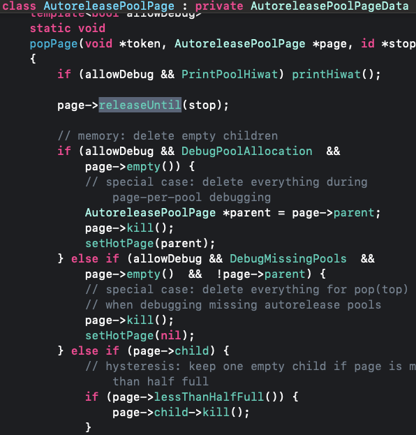
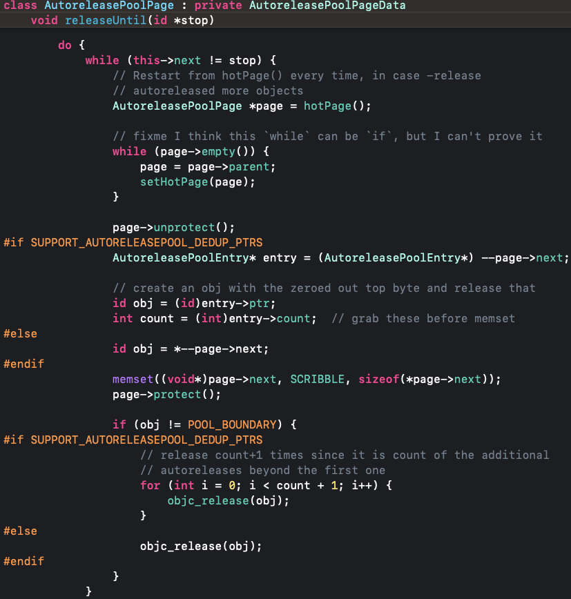
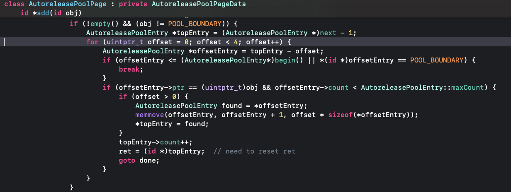

<!DOCTYPE html>


<html lang="en">
  

    <head>
      <meta charset="utf-8" />
        
      <meta
        name="viewport"
        content="width=device-width, initial-scale=1, maximum-scale=1"
      />
      <title>自动释放池 |  ayer</title>
  <meta name="generator" content="hexo-theme-ayer">
      
      <link rel="shortcut icon" href="/favicon.ico" />
       
<link rel="stylesheet" href="/dist/main.css">

      <link
        rel="stylesheet"
        href="https://cdn.jsdelivr.net/gh/Shen-Yu/cdn/css/remixicon.min.css"
      />
      
<link rel="stylesheet" href="/css/custom.css">
 
      <script src="https://cdn.jsdelivr.net/npm/pace-js@1.0.2/pace.min.js"></script>
       
 

      <!-- mermaid -->
      
      <script src="https://cdn.jsdelivr.net/npm/mermaid@8.9.2/dist/mermaid.min.js"></script>
      
    <link rel="alternate" href="/atom.xml" title="ayer" type="application/atom+xml">
</head>
  </html>
</html>


<body>
  <div id="app">
    
      
    <main class="content on">
      <section class="outer">
  <article
  id="post-iOS学习/内存管理/自动释放池"
  class="article article-type-post"
  itemscope
  itemprop="blogPost"
  data-scroll-reveal
>
  <div class="article-inner">
    
    <header class="article-header">
       
<h1 class="article-title sea-center" style="border-left:0" itemprop="name">
  自动释放池
</h1>
 

      
    </header>
     
    <div class="article-meta">
      <a href="/2023/02/18/iOS%E5%AD%A6%E4%B9%A0/%E5%86%85%E5%AD%98%E7%AE%A1%E7%90%86/%E8%87%AA%E5%8A%A8%E9%87%8A%E6%94%BE%E6%B1%A0/" class="article-date">
  <time datetime="2023-02-18T11:33:56.000Z" itemprop="datePublished">2023-02-18</time>
</a> 
  <div class="article-category">
    <a class="article-category-link" href="/categories/%E5%86%85%E5%AD%98%E7%AE%A1%E7%90%86/">内存管理</a>
  </div>
  
<div class="word_count">
    <span class="post-time">
        <span class="post-meta-item-icon">
            <i class="ri-quill-pen-line"></i>
            <span class="post-meta-item-text"> Word count:</span>
            <span class="post-count">1.1k</span>
        </span>
    </span>

    <span class="post-time">
        &nbsp; | &nbsp;
        <span class="post-meta-item-icon">
            <i class="ri-book-open-line"></i>
            <span class="post-meta-item-text"> Reading time≈</span>
            <span class="post-count">4 min</span>
        </span>
    </span>
</div>
 
    </div>
      
    <div class="tocbot"></div>


  
    <div class="article-entry" itemprop="articleBody">
       
  <h3 id="调试"><a href="#调试" class="headerlink" title="调试"></a>调试</h3><figure class="highlight plaintext"><table><tr><td class="gutter"><pre><span class="line">1</span><br><span class="line">2</span><br><span class="line">3</span><br></pre></td><td class="code"><pre><span class="line">@autoreleasepool &#123;</span><br><span class="line"></span><br><span class="line">&#125;</span><br></pre></td></tr></table></figure>
<ul>
<li>编译后发现,<code>xcrun -sdk iphoneos clang -arch arm64 -rewrite-objc main.m</code><figure class="highlight plaintext"><table><tr><td class="gutter"><pre><span class="line">1</span><br><span class="line">2</span><br><span class="line">3</span><br><span class="line">4</span><br><span class="line">5</span><br><span class="line">6</span><br><span class="line">7</span><br><span class="line">8</span><br><span class="line">9</span><br><span class="line">10</span><br><span class="line">11</span><br><span class="line">12</span><br><span class="line">13</span><br><span class="line">14</span><br><span class="line">15</span><br></pre></td><td class="code"><pre><span class="line">/* @autoreleasepool */ &#123; __AtAutoreleasePool __autoreleasepool; </span><br><span class="line">    //创建的时候调用构造函数，即 objc_autoreleasePoolPush();</span><br><span class="line">    &#125;</span><br><span class="line">    //代码块结束的时候析构函数,即 objc_autoreleasePoolPop(atautoreleasepoolobj)</span><br><span class="line">struct __AtAutoreleasePool &#123;</span><br><span class="line">    //构造函数，在创建结构体的时候调用</span><br><span class="line">  __AtAutoreleasePool() &#123; </span><br><span class="line">  atautoreleasepoolobj = objc_autoreleasePoolPush();</span><br><span class="line">  &#125;</span><br><span class="line">    //析构函数，在结构体销毁的时候调用</span><br><span class="line">  ~__AtAutoreleasePool() &#123;</span><br><span class="line">  objc_autoreleasePoolPop(atautoreleasepoolobj);</span><br><span class="line">  &#125;</span><br><span class="line">  void * atautoreleasepoolobj;</span><br><span class="line">&#125;;</span><br></pre></td></tr></table></figure>
<h3 id="源码"><a href="#源码" class="headerlink" title="源码"></a>源码</h3><figure class="highlight plaintext"><table><tr><td class="gutter"><pre><span class="line">1</span><br><span class="line">2</span><br><span class="line">3</span><br><span class="line">4</span><br><span class="line">5</span><br><span class="line">6</span><br><span class="line">7</span><br><span class="line">8</span><br><span class="line">9</span><br><span class="line">10</span><br><span class="line">11</span><br><span class="line">12</span><br></pre></td><td class="code"><pre><span class="line">void *</span><br><span class="line">objc_autoreleasePoolPush(void)</span><br><span class="line">&#123;</span><br><span class="line">    return AutoreleasePoolPage::push();</span><br><span class="line">&#125;</span><br><span class="line"></span><br><span class="line">NEVER_INLINE</span><br><span class="line">void</span><br><span class="line">objc_autoreleasePoolPop(void *ctxt)</span><br><span class="line">&#123;</span><br><span class="line">    AutoreleasePoolPage::pop(ctxt);</span><br><span class="line">&#125;</span><br></pre></td></tr></table></figure></li>
<li>自动释放池的主要底层数据结构是：<code>__AtAutoreleasePool</code>、<code>AutoreleasePoolPage</code></li>
<li>用了<code>autorelease</code>的对象最终都是通过<code>AutoreleasePoolPage</code>对象来管理的<h4 id="AutoreleasePoolPage"><a href="#AutoreleasePoolPage" class="headerlink" title="AutoreleasePoolPage"></a>AutoreleasePoolPage</h4></li>
<li>主要结构<figure class="highlight plaintext"><table><tr><td class="gutter"><pre><span class="line">1</span><br><span class="line">2</span><br><span class="line">3</span><br><span class="line">4</span><br><span class="line">5</span><br><span class="line">6</span><br><span class="line">7</span><br><span class="line">8</span><br><span class="line">9</span><br><span class="line">10</span><br><span class="line">11</span><br><span class="line">12</span><br><span class="line">13</span><br><span class="line">14</span><br><span class="line">15</span><br><span class="line">16</span><br><span class="line">17</span><br><span class="line">18</span><br><span class="line">19</span><br></pre></td><td class="code"><pre><span class="line">class AutoreleasePoolPage : private AutoreleasePoolPageData &#123; .... &#125;</span><br><span class="line">struct AutoreleasePoolPageData &#123;</span><br><span class="line">static size_t const SIZE =</span><br><span class="line">#if PROTECT_AUTORELEASEPOOL</span><br><span class="line">		PAGE_MAX_SIZE;  // must be multiple of vm page size</span><br><span class="line">#else</span><br><span class="line">		PAGE_MIN_SIZE;  // size and alignment, power of 2</span><br><span class="line">		//(1 &lt;&lt; 12) //4096</span><br><span class="line">#endif</span><br><span class="line"></span><br><span class="line"></span><br><span class="line">    magic_t const magic;</span><br><span class="line">	__unsafe_unretained id *next;</span><br><span class="line">	objc_thread_t const thread;</span><br><span class="line">	AutoreleasePoolPage * const parent;</span><br><span class="line">	AutoreleasePoolPage *child;</span><br><span class="line">	uint32_t const depth;</span><br><span class="line">	uint32_t hiwat;</span><br><span class="line">&#125;</span><br></pre></td></tr></table></figure></li>
<li>每个AutoreleasePoolPage对象占用4096字节内存，除了用来存放它内部的成员变量(主要成员大概占用56字节)，剩下的空间用来存放autorelease对象的地址<ul>
<li>剩下空间不够了，则会创建一个新的</li>
</ul>
</li>
<li>所有的AutoreleasePoolPage对象通过双向链表的形式连接在一起<h3 id="源码-1"><a href="#源码-1" class="headerlink" title="源码"></a>源码</h3></li>
<li>所有的<code>AutoreleasePoolPage</code>对象通过双向链表的形式连接在一起</li>
</ul>
<ol>
<li><code>objc_autoreleasePoolPush</code>调用push方法会将一个<code>POOL_BOUNDARY</code>(实际是个nil)入栈，并且返回其存放的内存地址<ul>
<li>后续调用<code>autorelease</code>加入释放值,也是调用<code>autoreleaseFast</code>方法添加到释放池，page不够，则创建新的，此时新的不用加<code>POOL_BOUNDARY</code>标记<figure class="highlight plaintext"><table><tr><td class="gutter"><pre><span class="line">1</span><br><span class="line">2</span><br><span class="line">3</span><br><span class="line">4</span><br><span class="line">5</span><br><span class="line">6</span><br><span class="line">7</span><br><span class="line">8</span><br><span class="line">9</span><br><span class="line">10</span><br><span class="line">11</span><br><span class="line">12</span><br><span class="line">13</span><br><span class="line">14</span><br><span class="line">15</span><br></pre></td><td class="code"><pre><span class="line">static inline void *push() </span><br><span class="line">    &#123;</span><br><span class="line">        ReturnAutoreleaseInfo info = getReturnAutoreleaseInfo();</span><br><span class="line">        moveTLSAutoreleaseToPool(info);</span><br><span class="line"></span><br><span class="line">        id *dest;</span><br><span class="line">        if (slowpath(DebugPoolAllocation)) &#123;</span><br><span class="line">            // Each autorelease pool starts on a new pool page.</span><br><span class="line">            dest = autoreleaseNewPage(POOL_BOUNDARY);//新建的页，第一个地址假上一个POOL_BOUNDARY</span><br><span class="line">        &#125; else &#123;</span><br><span class="line">            dest = autoreleaseFast(POOL_BOUNDARY);</span><br><span class="line">        &#125;</span><br><span class="line">        ASSERT(dest == (id *)EMPTY_POOL_PLACEHOLDER || *dest == POOL_BOUNDARY);</span><br><span class="line">        return dest;</span><br><span class="line">    &#125;</span><br></pre></td></tr></table></figure></li>
</ul>
</li>
<li><code>objc_autoreleasePoolPop(atautoreleasepoolobj)</code>,调用pop时，则会对所有添加的值调用<code>release</code>方法，直到遇到<code>POOL_BOUNDARY</code>为止,<code>holdPage</code>为当前页面<br><ol>
<li>存放的类型是<code>AutoreleasePoolEntry</code>,<code>ptr</code>是对象地址，<code>count</code>则是释放池内，该对象调用<code>autorelease</code>的次数<ul>
<li>当前页面没了，则会调整到父页，并设置父页面为当前页面，继续<code>release</code>，直到碰到<code>POOL_BOUNDARY</code></li>
<li>id *next指向了下一个能存放<code>autorelease</code>对象地址的区域<br></li>
</ul>
</li>
</ol>
</li>
<li><code>autorelease</code>方法实际内部调用的是<code>autoreleaseFast</code>，其传入的值是对象<figure class="highlight plaintext"><table><tr><td class="gutter"><pre><span class="line">1</span><br><span class="line">2</span><br><span class="line">3</span><br><span class="line">4</span><br><span class="line">5</span><br><span class="line">6</span><br><span class="line">7</span><br><span class="line">8</span><br><span class="line">9</span><br><span class="line">10</span><br><span class="line">11</span><br><span class="line">12</span><br></pre></td><td class="code"><pre><span class="line">static inline id *autoreleaseFast(id obj)</span><br><span class="line">    &#123;</span><br><span class="line">        AutoreleasePoolPage *page = hotPage();</span><br><span class="line">        if (page &amp;&amp; !page-&gt;full()) &#123;</span><br><span class="line">            return page-&gt;add(obj);</span><br><span class="line">        &#125; else if (page) &#123;</span><br><span class="line">            return autoreleaseFullPage(obj, page);</span><br><span class="line">        &#125; else &#123;</span><br><span class="line">            return autoreleaseNoPage(obj);</span><br><span class="line">        &#125;</span><br><span class="line">    &#125;</span><br><span class="line"></span><br></pre></td></tr></table></figure></li>
</ol>
<ul>
<li><code>add</code>添加到释放值，如果已经存在则增加次数，否则增加一个<code>AutoreleasePoolEntry</code><ul>
<li>这里增加次数只会在4个偏移内，如果超过了这个偏移，则当新的</li>
<li>在找到新存在的后，会将其移动到存储的最后一个<br><h3 id="查看释放值信息"><a href="#查看释放值信息" class="headerlink" title="查看释放值信息"></a>查看释放值信息</h3></li>
</ul>
</li>
<li><code>_objc_autoreleasePoolPrint</code>,该方法是一个私有方法,MRC环境下</li>
<li>p1在距离上一个p1在4的范围内，则数量增加1，并且移动到最后<figure class="highlight plaintext"><table><tr><td class="gutter"><pre><span class="line">1</span><br><span class="line">2</span><br><span class="line">3</span><br><span class="line">4</span><br><span class="line">5</span><br><span class="line">6</span><br><span class="line">7</span><br><span class="line">8</span><br><span class="line">9</span><br><span class="line">10</span><br><span class="line">11</span><br><span class="line">12</span><br><span class="line">13</span><br><span class="line">14</span><br><span class="line">15</span><br><span class="line">16</span><br><span class="line">17</span><br><span class="line">18</span><br><span class="line">19</span><br><span class="line">20</span><br><span class="line">21</span><br><span class="line">22</span><br><span class="line">23</span><br><span class="line">24</span><br><span class="line">25</span><br><span class="line">26</span><br><span class="line">27</span><br><span class="line">28</span><br><span class="line">29</span><br><span class="line">30</span><br><span class="line">31</span><br><span class="line">32</span><br><span class="line">33</span><br></pre></td><td class="code"><pre><span class="line">extern void _objc_autoreleasePoolPrint(void);</span><br><span class="line">@autoreleasepool &#123;  </span><br><span class="line">    CJPerson *p1 = [[[CJPerson alloc] init] autorelease];</span><br><span class="line">    CJPerson *p2 = [[[CJPerson alloc] init] autorelease];</span><br><span class="line">    CJPerson *p3 = [[[CJPerson alloc] init] autorelease];</span><br><span class="line">    CJPerson *p4 = [[[CJPerson alloc] init] autorelease];</span><br><span class="line">    [p1 retain];</span><br><span class="line">    [p1 autorelease];</span><br><span class="line">    CJPerson *p5 = [[[CJPerson alloc] init] autorelease];</span><br><span class="line">    @autoreleasepool &#123; </span><br><span class="line">            CJPerson *p6 = [[[CJPerson alloc] init] autorelease];</span><br><span class="line">             _objc_autoreleasePoolPrint();</span><br><span class="line">    &#125;</span><br><span class="line">   </span><br><span class="line">&#125;</span><br><span class="line"></span><br><span class="line">/*</span><br><span class="line">objc[5867]: ##############</span><br><span class="line">objc[5867]: AUTORELEASE POOLS for thread 0x7ff856aee640</span><br><span class="line">objc[5867]: 10 releases pending.</span><br><span class="line">objc[5867]: [0x10080b000]  ................  PAGE  (hot) (cold)</span><br><span class="line">objc[5867]: [0x10080b038]  ################  POOL 0x10080b038</span><br><span class="line">//每个AutoreleasePoolEntry`指针占8位</span><br><span class="line">objc[5867]: [0x10080b040]    0x600000004060  CJPerson</span><br><span class="line">objc[5867]: [0x10080b048]    0x600000004070  CJPerson</span><br><span class="line">objc[5867]: [0x10080b050]    0x600000004080  CJPerson</span><br><span class="line">//移动到最后，并且会打印数量</span><br><span class="line">objc[5867]: [0x10080b058]    0x600000004050  CJPerson  autorelease count 2 </span><br><span class="line">objc[5867]: [0x10080b060]    0x600000004090  CJPerson</span><br><span class="line">objc[5867]: [0x10080b068]  ################  POOL 0x10080b068</span><br><span class="line">objc[5867]: [0x10080b070]    0x6000000040a0  CJPerson</span><br><span class="line">objc[5867]: ##############</span><br><span class="line">*/</span><br></pre></td></tr></table></figure></li>
<li>p1在距离上一个p1在4的范围之外，则会另新增一个，尽管他们存的内存地址是一样的<figure class="highlight plaintext"><table><tr><td class="gutter"><pre><span class="line">1</span><br><span class="line">2</span><br><span class="line">3</span><br><span class="line">4</span><br><span class="line">5</span><br><span class="line">6</span><br><span class="line">7</span><br><span class="line">8</span><br><span class="line">9</span><br><span class="line">10</span><br><span class="line">11</span><br><span class="line">12</span><br><span class="line">13</span><br><span class="line">14</span><br><span class="line">15</span><br><span class="line">16</span><br><span class="line">17</span><br><span class="line">18</span><br><span class="line">19</span><br><span class="line">20</span><br><span class="line">21</span><br><span class="line">22</span><br><span class="line">23</span><br><span class="line">24</span><br><span class="line">25</span><br><span class="line">26</span><br><span class="line">27</span><br><span class="line">28</span><br><span class="line">29</span><br><span class="line">30</span><br><span class="line">31</span><br><span class="line">32</span><br><span class="line">33</span><br><span class="line">34</span><br></pre></td><td class="code"><pre><span class="line">extern void _objc_autoreleasePoolPrint(void);</span><br><span class="line">@autoreleasepool &#123;  </span><br><span class="line">    CJPerson *p1 = [[[CJPerson alloc] init] autorelease];</span><br><span class="line">    CJPerson *p2 = [[[CJPerson alloc] init] autorelease];</span><br><span class="line">    CJPerson *p3 = [[[CJPerson alloc] init] autorelease];</span><br><span class="line">    CJPerson *p4 = [[[CJPerson alloc] init] autorelease];</span><br><span class="line">    CJPerson *p5 = [[[CJPerson alloc] init] autorelease];</span><br><span class="line">    [p1 retain];</span><br><span class="line">    [p1 autorelease];</span><br><span class="line">    @autoreleasepool &#123; </span><br><span class="line">            CJPerson *p6 = [[[CJPerson alloc] init] autorelease];</span><br><span class="line">             _objc_autoreleasePoolPrint();</span><br><span class="line">    &#125;</span><br><span class="line">   </span><br><span class="line">&#125;</span><br><span class="line"></span><br><span class="line">/*</span><br><span class="line">objc[6090]: ##############</span><br><span class="line">objc[6090]: AUTORELEASE POOLS for thread 0x7ff856aee640</span><br><span class="line">objc[6090]: 11 releases pending.</span><br><span class="line">objc[6090]: [0x102009000]  ................  PAGE  (hot) (cold)</span><br><span class="line">objc[6090]: [0x102009038]  ################  POOL 0x102009038</span><br><span class="line">objc[6090]: [0x102009040]    0x60000000c020  CJPerson</span><br><span class="line">objc[6090]: [0x102009048]    0x60000000c030  CJPerson</span><br><span class="line">objc[6090]: [0x102009050]    0x60000000c040  CJPerson</span><br><span class="line">objc[6090]: [0x102009058]    0x60000000c050  CJPerson</span><br><span class="line">objc[6090]: [0x102009060]    0x60000000c060  CJPerson</span><br><span class="line">objc[6090]: [0x102009068]    0x60000000c020  CJPerson</span><br><span class="line">objc[6090]: [0x102009070]  ################  POOL 0x102009070</span><br><span class="line">objc[6090]: [0x102009078]    0x60000000c070  CJPerson</span><br><span class="line">objc[6090]: [0x102009080]  ################  POOL 0x102009080</span><br><span class="line">objc[6090]: [0x102009088]    0x60000000c080  CJPerson</span><br><span class="line">objc[6090]: ##############</span><br><span class="line">*/</span><br></pre></td></tr></table></figure>
<h3 id="autorelease时机"><a href="#autorelease时机" class="headerlink" title="autorelease时机"></a>autorelease时机</h3></li>
<li>iOS在主线程的Runloop中注册了2个Observer<ul>
<li>第1个<code>Observer</code>监听了<code>kCFRunLoopEntry</code>事件，会调用<code>objc_autoreleasePoolPush()</code></li>
<li>第2个<code>Observer</code>监听了<code>kCFRunLoopBeforeWaiting</code>事件，会调用<code>objc_autoreleasePoolPop()</code>、<code>objc_autoreleasePoolPush()</code></li>
<li>  监听了<code>kCFRunLoopBeforeExit</code>事件，会调用<code>objc_autoreleasePoolPop()</code></li>
</ul>
</li>
</ul>
 
      <!-- reward -->
      
    </div>
    

    <!-- copyright -->
    
    <div class="declare">
      <ul class="post-copyright">
        <li>
          <i class="ri-copyright-line"></i>
          <strong>Copyright： </strong>
          
          Copyright is owned by the author. For commercial reprints, please contact the author for authorization. For non-commercial reprints, please indicate the source.
          
        </li>
      </ul>
    </div>
    
    <footer class="article-footer">
       
<div class="share-btn">
      <span class="share-sns share-outer">
        <i class="ri-share-forward-line"></i>
        分享
      </span>
      <div class="share-wrap">
        <i class="arrow"></i>
        <div class="share-icons">
          
          <a class="weibo share-sns" href="javascript:;" data-type="weibo">
            <i class="ri-weibo-fill"></i>
          </a>
          <a class="weixin share-sns wxFab" href="javascript:;" data-type="weixin">
            <i class="ri-wechat-fill"></i>
          </a>
          <a class="qq share-sns" href="javascript:;" data-type="qq">
            <i class="ri-qq-fill"></i>
          </a>
          <a class="douban share-sns" href="javascript:;" data-type="douban">
            <i class="ri-douban-line"></i>
          </a>
          <!-- <a class="qzone share-sns" href="javascript:;" data-type="qzone">
            <i class="icon icon-qzone"></i>
          </a> -->
          
          <a class="facebook share-sns" href="javascript:;" data-type="facebook">
            <i class="ri-facebook-circle-fill"></i>
          </a>
          <a class="twitter share-sns" href="javascript:;" data-type="twitter">
            <i class="ri-twitter-fill"></i>
          </a>
          <a class="google share-sns" href="javascript:;" data-type="google">
            <i class="ri-google-fill"></i>
          </a>
        </div>
      </div>
</div>

<div class="wx-share-modal">
    <a class="modal-close" href="javascript:;"><i class="ri-close-circle-line"></i></a>
    <p>扫一扫，分享到微信</p>
    <div class="wx-qrcode">
      
    </div>
</div>

<div id="share-mask"></div>  
    </footer>
  </div>

   
  <nav class="article-nav">
    
      <a href="/2023/02/19/iOS%E5%AD%A6%E4%B9%A0/%E6%80%A7%E8%83%BD%E4%BC%98%E5%8C%96/%E5%8D%A1%E9%A1%BF%E4%BC%98%E5%8C%96/" class="article-nav-link">
        <strong class="article-nav-caption">上一篇</strong>
        <div class="article-nav-title">
          
            卡顿优化
          
        </div>
      </a>
    
    
      <a href="/2023/02/18/iOS%E5%AD%A6%E4%B9%A0/%E5%86%85%E5%AD%98%E7%AE%A1%E7%90%86/dealloc/" class="article-nav-link">
        <strong class="article-nav-caption">下一篇</strong>
        <div class="article-nav-title">dealloc</div>
      </a>
    
  </nav>

   
<!-- valine评论 -->
<div id="vcomments-box">
  <div id="vcomments"></div>
</div>
<script src="//cdn1.lncld.net/static/js/3.0.4/av-min.js"></script>
<script src="https://cdn.jsdelivr.net/npm/valine@1.4.14/dist/Valine.min.js"></script>
<script>
  new Valine({
    el: "#vcomments",
    app_id: "",
    app_key: "",
    path: window.location.pathname,
    avatar: "monsterid",
    placeholder: "给我的文章加点评论吧~",
    recordIP: true,
  });
  const infoEle = document.querySelector("#vcomments .info");
  if (infoEle && infoEle.childNodes && infoEle.childNodes.length > 0) {
    infoEle.childNodes.forEach(function (item) {
      item.parentNode.removeChild(item);
    });
  }
</script>
<style>
  #vcomments-box {
    padding: 5px 30px;
  }

  @media screen and (max-width: 800px) {
    #vcomments-box {
      padding: 5px 0px;
    }
  }

  #vcomments-box #vcomments {
    background-color: #fff;
  }

  .v .vlist .vcard .vh {
    padding-right: 20px;
  }

  .v .vlist .vcard {
    padding-left: 10px;
  }
</style>

 
   
     
</article>

</section>
      <footer class="footer">
  <div class="outer">
    <ul>
      <li>
        Copyrights &copy;
        2021-2023
        <i class="ri-heart-fill heart_icon"></i> jingbo
      </li>
    </ul>
    <ul>
      <li>
        
        
        
        Powered by <a href="https://hexo.io" target="_blank">Hexo</a>
        <span class="division">|</span>
        Theme - <a href="https://github.com/Shen-Yu/hexo-theme-ayer" target="_blank">Ayer</a>
        
      </li>
    </ul>
    <ul>
      <li>
        
        
        <span>
  <span><i class="ri-user-3-fill"></i>Visitors:<span id="busuanzi_value_site_uv"></span></span>
  <span class="division">|</span>
  <span><i class="ri-eye-fill"></i>Views:<span id="busuanzi_value_page_pv"></span></span>
</span>
        
      </li>
    </ul>
    <ul>
      
    </ul>
    <ul>
      
    </ul>
    <ul>
      <li>
        <!-- cnzz统计 -->
        
        <script type="text/javascript" src='https://s9.cnzz.com/z_stat.php?id=1278069914&amp;web_id=1278069914'></script>
        
      </li>
    </ul>
  </div>
</footer>
      <div class="float_btns">
        <div class="totop" id="totop">
  <i class="ri-arrow-up-line"></i>
</div>

<div class="todark" id="todark">
  <i class="ri-moon-line"></i>
</div>

      </div>
    </main>
    <aside class="sidebar on">
      <button class="navbar-toggle"></button>
<nav class="navbar">
  
  <div class="logo">
    <a href="/"></a>
  </div>
  
  <ul class="nav nav-main">
    
    <li class="nav-item">
      <a class="nav-item-link" href="/">主页</a>
    </li>
    
    <li class="nav-item">
      <a class="nav-item-link" href="/archives">归档</a>
    </li>
    
    <li class="nav-item">
      <a class="nav-item-link" href="/categories">分类</a>
    </li>
    
    <li class="nav-item">
      <a class="nav-item-link" href="/tags">标签</a>
    </li>
    
    <li class="nav-item">
      <a class="nav-item-link" href="/photos">相册</a>
    </li>
    
  </ul>
</nav>
<nav class="navbar navbar-bottom">
  <ul class="nav">
    <li class="nav-item">
      
      <a class="nav-item-link nav-item-search"  title="Search">
        <i class="ri-search-line"></i>
      </a>
      
      
      <a class="nav-item-link" target="_blank" href="/atom.xml" title="RSS Feed">
        <i class="ri-rss-line"></i>
      </a>
      
    </li>
  </ul>
</nav>
<div class="search-form-wrap">
  <div class="local-search local-search-plugin">
  <input type="search" id="local-search-input" class="local-search-input" placeholder="Search...">
  <div id="local-search-result" class="local-search-result"></div>
</div>
</div>
    </aside>
    <div id="mask"></div>

<!-- #reward -->
<div id="reward">
  <span class="close"><i class="ri-close-line"></i></span>
  <p class="reward-p"><i class="ri-cup-line"></i>请我喝杯咖啡吧~</p>
  <div class="reward-box">
    
    <div class="reward-item">
      
      <span class="reward-type">支付宝</span>
    </div>
    
    
    <div class="reward-item">
      
      <span class="reward-type">微信</span>
    </div>
    
  </div>
</div>
    
<script src="/js/jquery-2.0.3.min.js"></script>
 
<script src="/js/lazyload.min.js"></script>

<!-- Tocbot -->
 
<script src="/js/tocbot.min.js"></script>

<script>
  tocbot.init({
    tocSelector: ".tocbot",
    contentSelector: ".article-entry",
    headingSelector: "h1, h2, h3, h4, h5, h6",
    hasInnerContainers: true,
    scrollSmooth: true,
    scrollContainer: "main",
    positionFixedSelector: ".tocbot",
    positionFixedClass: "is-position-fixed",
    fixedSidebarOffset: "auto",
  });
</script>

<script src="https://cdn.jsdelivr.net/npm/jquery-modal@0.9.2/jquery.modal.min.js"></script>
<link
  rel="stylesheet"
  href="https://cdn.jsdelivr.net/npm/jquery-modal@0.9.2/jquery.modal.min.css"
/>
<script src="https://cdn.jsdelivr.net/npm/justifiedGallery@3.7.0/dist/js/jquery.justifiedGallery.min.js"></script>

<script src="/dist/main.js"></script>

<!-- ImageViewer -->
 <!-- Root element of PhotoSwipe. Must have class pswp. -->
<div class="pswp" tabindex="-1" role="dialog" aria-hidden="true">

    <!-- Background of PhotoSwipe. 
         It's a separate element as animating opacity is faster than rgba(). -->
    <div class="pswp__bg"></div>

    <!-- Slides wrapper with overflow:hidden. -->
    <div class="pswp__scroll-wrap">

        <!-- Container that holds slides. 
            PhotoSwipe keeps only 3 of them in the DOM to save memory.
            Don't modify these 3 pswp__item elements, data is added later on. -->
        <div class="pswp__container">
            <div class="pswp__item"></div>
            <div class="pswp__item"></div>
            <div class="pswp__item"></div>
        </div>

        <!-- Default (PhotoSwipeUI_Default) interface on top of sliding area. Can be changed. -->
        <div class="pswp__ui pswp__ui--hidden">

            <div class="pswp__top-bar">

                <!--  Controls are self-explanatory. Order can be changed. -->

                <div class="pswp__counter"></div>

                <button class="pswp__button pswp__button--close" title="Close (Esc)"></button>

                <button class="pswp__button pswp__button--share" style="display:none" title="Share"></button>

                <button class="pswp__button pswp__button--fs" title="Toggle fullscreen"></button>

                <button class="pswp__button pswp__button--zoom" title="Zoom in/out"></button>

                <!-- Preloader demo http://codepen.io/dimsemenov/pen/yyBWoR -->
                <!-- element will get class pswp__preloader--active when preloader is running -->
                <div class="pswp__preloader">
                    <div class="pswp__preloader__icn">
                        <div class="pswp__preloader__cut">
                            <div class="pswp__preloader__donut"></div>
                        </div>
                    </div>
                </div>
            </div>

            <div class="pswp__share-modal pswp__share-modal--hidden pswp__single-tap">
                <div class="pswp__share-tooltip"></div>
            </div>

            <button class="pswp__button pswp__button--arrow--left" title="Previous (arrow left)">
            </button>

            <button class="pswp__button pswp__button--arrow--right" title="Next (arrow right)">
            </button>

            <div class="pswp__caption">
                <div class="pswp__caption__center"></div>
            </div>

        </div>

    </div>

</div>

<link rel="stylesheet" href="https://cdn.jsdelivr.net/npm/photoswipe@4.1.3/dist/photoswipe.min.css">
<link rel="stylesheet" href="https://cdn.jsdelivr.net/npm/photoswipe@4.1.3/dist/default-skin/default-skin.min.css">
<script src="https://cdn.jsdelivr.net/npm/photoswipe@4.1.3/dist/photoswipe.min.js"></script>
<script src="https://cdn.jsdelivr.net/npm/photoswipe@4.1.3/dist/photoswipe-ui-default.min.js"></script>

<script>
    function viewer_init() {
        let pswpElement = document.querySelectorAll('.pswp')[0];
        let $imgArr = document.querySelectorAll(('.article-entry img:not(.reward-img)'))

        $imgArr.forEach(($em, i) => {
            $em.onclick = () => {
                // slider展开状态
                // todo: 这样不好，后面改成状态
                if (document.querySelector('.left-col.show')) return
                let items = []
                $imgArr.forEach(($em2, i2) => {
                    let img = $em2.getAttribute('data-idx', i2)
                    let src = $em2.getAttribute('data-target') || $em2.getAttribute('src')
                    let title = $em2.getAttribute('alt')
                    // 获得原图尺寸
                    const image = new Image()
                    image.src = src
                    items.push({
                        src: src,
                        w: image.width || $em2.width,
                        h: image.height || $em2.height,
                        title: title
                    })
                })
                var gallery = new PhotoSwipe(pswpElement, PhotoSwipeUI_Default, items, {
                    index: parseInt(i)
                });
                gallery.init()
            }
        })
    }
    viewer_init()
</script> 
<!-- MathJax -->
 <script type="text/x-mathjax-config">
  MathJax.Hub.Config({
      tex2jax: {
          inlineMath: [ ['$','$'], ["\\(","\\)"]  ],
          processEscapes: true,
          skipTags: ['script', 'noscript', 'style', 'textarea', 'pre', 'code']
      }
  });

  MathJax.Hub.Queue(function() {
      var all = MathJax.Hub.getAllJax(), i;
      for(i=0; i < all.length; i += 1) {
          all[i].SourceElement().parentNode.className += ' has-jax';
      }
  });
</script>

<script src="https://cdn.jsdelivr.net/npm/mathjax@2.7.6/unpacked/MathJax.js?config=TeX-AMS-MML_HTMLorMML"></script>
<script>
  var ayerConfig = {
    mathjax: true,
  };
</script>

<!-- Katex -->

<!-- busuanzi  -->
 
<script src="/js/busuanzi-2.3.pure.min.js"></script>
 
<!-- ClickLove -->
 
<script src="/js/clickLove.js"></script>
 
<!-- ClickBoom1 -->

<!-- ClickBoom2 -->

<!-- CodeCopy -->
 
<link rel="stylesheet" href="/css/clipboard.css">
 <script src="https://cdn.jsdelivr.net/npm/clipboard@2/dist/clipboard.min.js"></script>
<script>
  function wait(callback, seconds) {
    var timelag = null;
    timelag = window.setTimeout(callback, seconds);
  }
  !function (e, t, a) {
    var initCopyCode = function(){
      var copyHtml = '';
      copyHtml += '<button class="btn-copy" data-clipboard-snippet="">';
      copyHtml += '<i class="ri-file-copy-2-line"></i><span>COPY</span>';
      copyHtml += '</button>';
      $(".highlight .code pre").before(copyHtml);
      $(".article pre code").before(copyHtml);
      var clipboard = new ClipboardJS('.btn-copy', {
        target: function(trigger) {
          return trigger.nextElementSibling;
        }
      });
      clipboard.on('success', function(e) {
        let $btn = $(e.trigger);
        $btn.addClass('copied');
        let $icon = $($btn.find('i'));
        $icon.removeClass('ri-file-copy-2-line');
        $icon.addClass('ri-checkbox-circle-line');
        let $span = $($btn.find('span'));
        $span[0].innerText = 'COPIED';
        
        wait(function () { // 等待两秒钟后恢复
          $icon.removeClass('ri-checkbox-circle-line');
          $icon.addClass('ri-file-copy-2-line');
          $span[0].innerText = 'COPY';
        }, 2000);
      });
      clipboard.on('error', function(e) {
        e.clearSelection();
        let $btn = $(e.trigger);
        $btn.addClass('copy-failed');
        let $icon = $($btn.find('i'));
        $icon.removeClass('ri-file-copy-2-line');
        $icon.addClass('ri-time-line');
        let $span = $($btn.find('span'));
        $span[0].innerText = 'COPY FAILED';
        
        wait(function () { // 等待两秒钟后恢复
          $icon.removeClass('ri-time-line');
          $icon.addClass('ri-file-copy-2-line');
          $span[0].innerText = 'COPY';
        }, 2000);
      });
    }
    initCopyCode();
  }(window, document);
</script>
 
<!-- CanvasBackground -->
 
<script src="/js/dz.js"></script>
 
<script>
  if (window.mermaid) {
    mermaid.initialize({ theme: "forest" });
  }
</script>


    
    <div id="music">
    
    
    
    <iframe frameborder="no" border="1" marginwidth="0" marginheight="0" width="200" height="86"
        src="//music.163.com/outchain/player?type=2&id=22707022&auto=1&height=66"></iframe>
</div>

<style>
    #music {
        position: fixed;
        right: 15px;
        bottom: 0;
        z-index: 998;
    }
</style>
    
  </div>
<script src="/live2dw/lib/L2Dwidget.min.js?094cbace49a39548bed64abff5988b05"></script><script>L2Dwidget.init({"pluginRootPath":"live2dw/","pluginJsPath":"lib/","pluginModelPath":"assets/","tagMode":false,"debug":false,"model":{"show":true,"jsonPath":"ak12_3302"},"display":{"position":"right","width":150,"height":300,"vOffset":100},"mobile":{"show":true},"react":{"opacity":0.7},"log":false});</script></body>

</html>